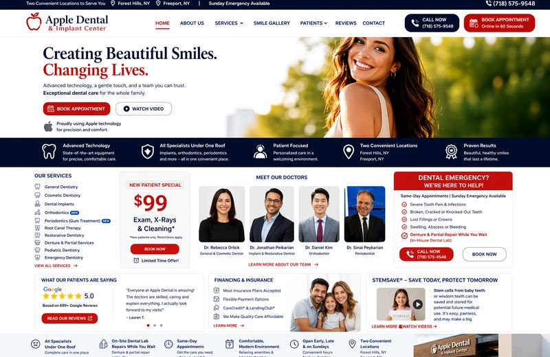
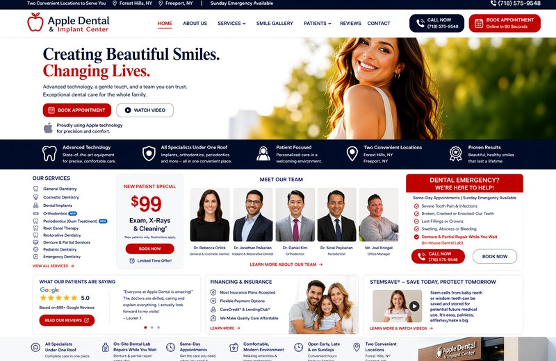

Family dentistry, cosmetic dentistry, implants, orthodontics, periodontics, root canals, oral surgery, sedation dentistry, emergency care, and same-day denture or partial repairs.

General dentists and specialists work together in one office.
Denture and partial repairs can often be handled quickly.
Urgent care for pain, swelling, broken teeth, or appliances.
This video uses the original audio from your uploaded office video, so there is no artificial humming soundtrack.
Each service includes a simple explanation below.

Whitening, bonding, veneers, and smile design to improve shape, color, and confidence.
Watch explanation
Single-tooth implants and full-arch replacement options including immediate load, All-on-4, and All-on-6.
Watch explanation
Invisalign, 3M / Clarity aligners, Candid aligners, and orthodontic planning.
Watch explanation
Deep cleanings, periodontal maintenance, gum therapy, and bone-health support.
Watch explanation
Root canal therapy to relieve pain and help save natural teeth.
Watch explanation
Extractions, surgical care, and coordinated treatment with our surgical team.
Watch explanation
Comfort-focused options for anxious patients or longer procedures.
Watch explanation
Fast denture and partial repair services, often while you wait.
Watch explanation
Same-day urgent care for pain, swelling, broken teeth, lost crowns, and appliance repairs.
Watch explanationClear, video-style educational sections for each treatment area.
Routine visits help prevent problems before they become bigger. We check teeth, gums, bite, and X-rays, then explain treatment in simple terms.
Ask Our DoctorsCosmetic dentistry improves tooth color, shape, spacing, and symmetry. Options may include whitening, bonding, veneers, crowns, or a full smile makeover.
Ask Our DoctorsImplants replace missing teeth. Options may include one tooth, multiple teeth, immediate-load temporary teeth, All-on-4, or All-on-6 full-arch treatment.
Ask Our DoctorsClear aligners and orthodontics improve crowding, spacing, bite alignment, and smile balance.
Ask Our DoctorsGum treatment focuses on bleeding gums, inflammation, gum pockets, bone loss, and keeping natural teeth healthy.
Ask Our DoctorsA root canal removes infection or irritation inside the tooth, relieves pain, and helps save the natural tooth when possible.
Ask Our DoctorsOral surgery may include extractions, wisdom teeth, implant-related procedures, and other surgical dental care.
Ask Our DoctorsSedation dentistry helps anxious patients feel more comfortable and can make longer or more complex treatment easier.
Ask Our DoctorsOur lab support helps with fast denture and partial repairs, often while you wait.
Ask Our DoctorsCall for tooth pain, swelling, broken teeth, lost crowns, infection, or denture and partial repair needs. Sunday emergency appointments are available.
Ask Our DoctorsStemSave focuses on preserving stem cells from eligible extracted teeth, including baby teeth, wisdom teeth, and selected healthy permanent teeth. Stem cells may have future potential in regenerative medicine. Ask us before an extraction if this may be an option.
Ask Our DoctorsDental stem cell banking may preserve an option for future medical advances. If a tooth is being extracted, ask our doctors whether it may be eligible for StemSave collection.

General Dentist

General Dentist

General Dentist

Oral Surgery

Orthodontist

Periodontist

Periodontist

Endodontist

Office Manager

Dental Hygienist


Case #31 appears first. Each case stays together by folder number.
Fill out registration forms before you arrive. Bring completed forms or email ahead to save even more time.
Download FormsForest Hills:
113-16 76th Rd, Forest Hills, NY 11375
(718) 575-9548
Freeport:
117 W Sunrise Hwy, Freeport, NY 11520
(516) 600-9877
Toll-Free: 1-888-83APPLE (27753)